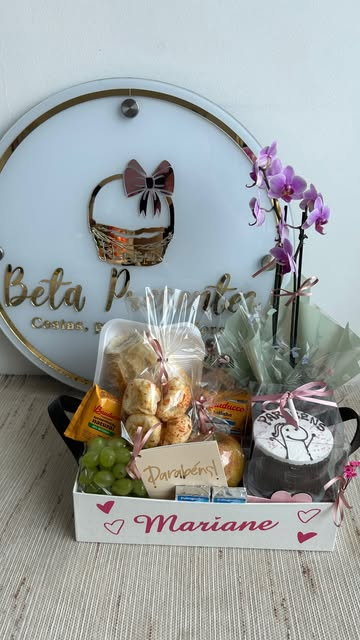
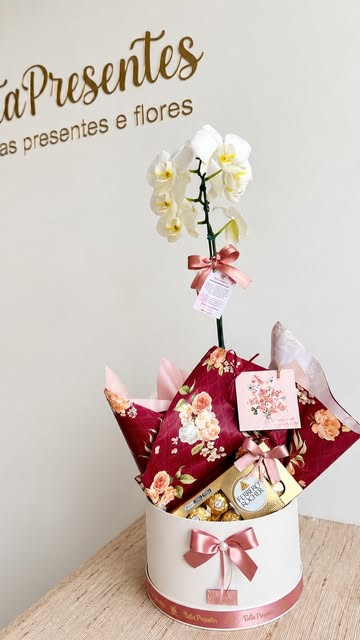

A loja, por dentro
A Beta Presentes fica na Rua dos Lírios, 710, sala 3, no Portais (Polvilho), em Cajamar. Monta cestas, buquês e presentes à mão e entrega na região.
- Rua dos Lírios, 710
- sala 3, no Portais (Polvilho), Cajamar — SP
- 10h às 19h
- de segunda a sexta; no sábado, até as 18h
- @betapresente
- onde a Beta mostra o trabalho de cada dia
- 204 presentes
- no catálogo oficial, em 13 categorias
O trabalho, em poucas linhas
O que está escrito aqui vem do catálogo da própria loja e do perfil da Beta nas redes.
Transformando presentes em emoções
É assim que a Beta descreve o que faz. Cestas de café da manhã, buquês, chocolates, bebidas, orquídeas, pelúcias e presentes montados um a um.
Treze categorias, 204 presentes
De uma rosa no card a uma cesta baú de café completo. Se o que você quer não estiver no catálogo, a Beta faz orçamento pelo WhatsApp.
Montado no dia, embalado na hora
Todas as cestas saem embaladas em papel celofane com laço de presente. Faltando um item, ele é substituído por outro do mesmo valor.
Personalização
Caixas e bags podem levar o nome de quem recebe. Para isso, e para cestas com bolo caseiro, é preciso encomendar com 1 ou 2 dias de antecedência.
A loja, o balcão e o que sai dele
Fotos publicadas pela própria Beta no Instagram. Clique para abrir a publicação.

Cesta com o nome de quem recebe
Orquídea no cachepô, pronta para entregarNos stories fixados do perfil estão a loja física, as entregas, os bastidores e os buquês da semana.
Condições, trocas e devoluções
Texto da própria loja, reproduzido sem alteração de sentido.
Condições gerais
Reservas mediante sinal de 50%. Para entrega, consultar a taxa e enviar o endereço completo. Caso a entrega não seja recebida em 15 minutos pelo destinatário, o entregador retorna com o presente — e uma nova taxa de entrega passa a ser devida.
Comprovante de pagamento
O pedido só é confirmado depois do envio do comprovante de pagamento pelo WhatsApp e da confirmação da loja. Formas de pagamento: Pix, dinheiro, cartão de crédito ou débito. No parcelamento, consultar as taxas.
Devolução de produtos
Para compras on-line, a loja permite devolução por arrependimento em até 7 dias corridos após o recebimento. Para trocar ou devolver, entre em contato pelo WhatsApp (11) 97169-7239 com as fotos do produto recebido; a resposta com as instruções vem em até 7 dias corridos. O produto deve ser devolvido sem violação e sem indício de uso.
Devolução de flores
As características naturais das flores, inclusive variações de cor, são preservadas. O prazo para pedir devolução de flores é de 12 horas a contar do recebimento. Para flores e buquês, o estorno é parcial, de 50%, em dinheiro ou voucher com validade de 30 dias.
Restituição de valores
Voucher em produtos da loja, com uso em até 30 dias; ou estorno parcial ou integral. No cartão de crédito, a solicitação é enviada à administradora em até 7 dias úteis após a aprovação da devolução. No Pix ou transferência, o estorno acontece em até 30 dias.
Onde fica e quando abre
R. dos Lírios, 710 — Sala 3, Portais (Polvilho), Cajamar — SP. Segunda a sexta das 10h às 19h, sábado das 10h às 18h. Domingo fechado.